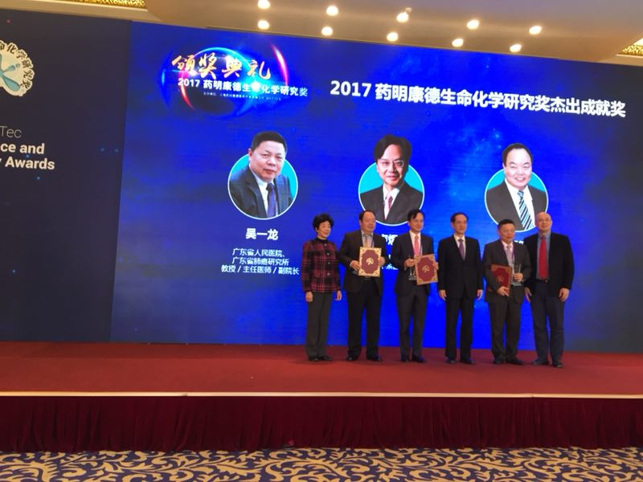

新闻动态
我课题组周德敏教授获2017年度药明康德生命化学研究奖杰出成就奖
2017年12月9日，我国生命科学研究领域权威奖项、第十一届“药明康德生命化学研究奖”公布评选结果。凭借突破性制备存在复制缺陷的活流感病毒疫苗，课题组长周德敏教授荣获2017药明康德生命化学研究奖-杰出成就奖。全国政协副主席、中科院院士韩启德等领导亲临颁奖典礼现场，为获奖者颁奖。

药明康德生命化学研究奖是2007年初国家科技部批准，由药明康德设立，旨在奖励中国医药研发领域在科研创新、成果推广及高新技术产业化等方面取得重大成果的优秀中青年科技人才。过去十多年来，药明康德生命化学研究奖不断优化创新，为推动国内相关领域的科研创新、成果转化以及产业发展发挥了重要作用，并发展成为中国生命科学领域的最高荣誉之一。截至今年，共有185位优秀科学家获此荣誉，其中有15位获奖者入选中国科学院和中国工程院院士。

周德敏教授以“病毒直接转换为活疫苗和治疗性药物的通用方法”获得“药明康德生命化学研究奖”杰出成就奖。流感、艾滋病等致命性传染病及其周期性爆发，时刻危害着人类健康和社会稳定，其“幕后黑手”是结构多样、功能复杂且变异快速的病毒，而疫苗是预防病毒感染的有效手段。在国家创新药物专项、基金委和国家“973”计划的支持下，周德敏教授/张礼和院士课题组，以流感病毒为模型，发明了人工控制病毒复制从而将病毒直接转化为疫苗的技术，即在保留病毒完整结构和感染力的情况下，仅突变病毒基因组的一个三联码，使流感病毒由致命性传染源变为了预防性疫苗，再突变三个以上三联码，病毒由预防性疫苗变为治疗病毒感染的药物，并且随着三联码数目的增加而药效增强。这一“四两拨千斤”技术不仅使疫苗研发不再复杂，而且摆脱了对病毒生物学知识获得的依赖，并适用于几乎所有病毒。这一发现颠覆了病毒疫苗研发的理念，成就了活病毒疫苗的重大突破。
近年来，周德敏教授团队致力于药物研发过程中新技术新方法的研究，瞄准国际前沿，面向国家重大需求，在调控病毒-细胞识别的新型抗病毒小分子药物的研发、蛋白质生物大分子药物的定点修饰、AAV病毒用于基因治疗、药物靶点/生物标志物发现与确证等领域中展开研究。目前牵头国家科技部973、创新药物重大专项、基金委重点基金和国际合作基金等多个项目；在Science、PNAS、Chem Rev、JACS、JMC、NAR等杂志发表论文90余篇，论文引用2000余次。